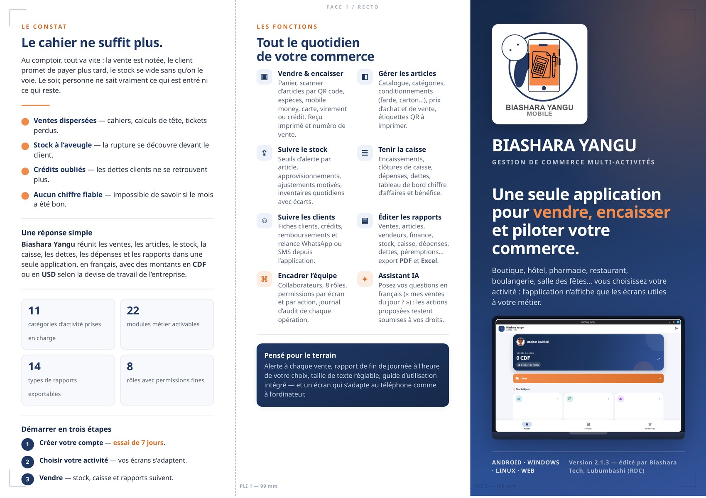
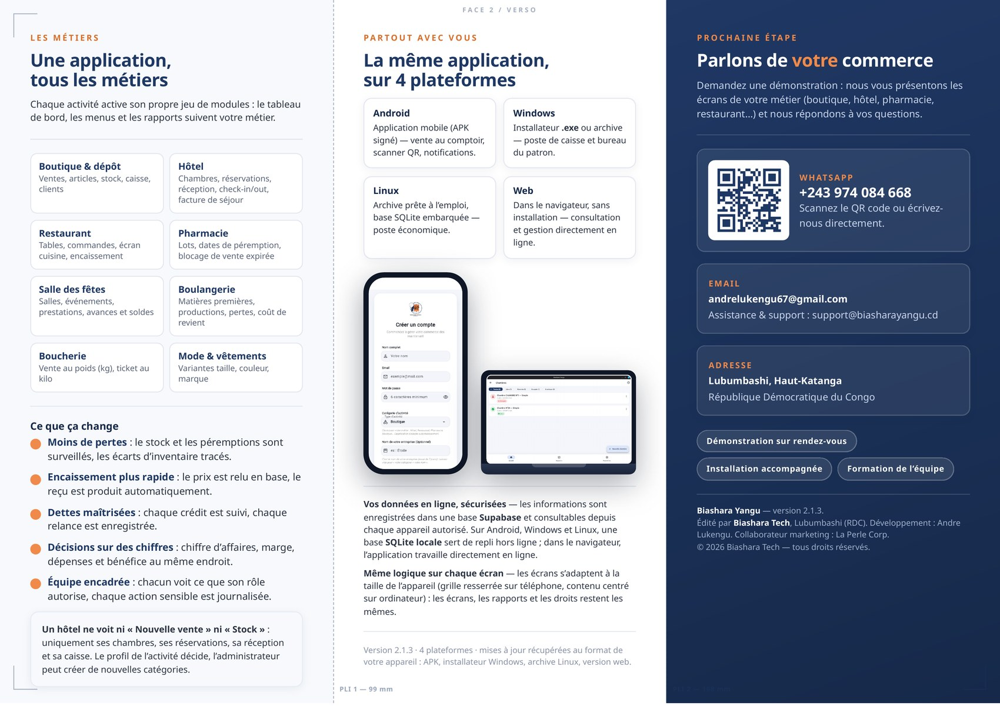

Le cahier ne suffit plus.
Biashara Yangu réunit les ventes, les articles, le stock, la caisse, les dettes, les dépenses et les rapports dans une seule application, en français. Chaque activité (boutique, hôtel, pharmacie, restaurant, salle des fêtes, boulangerie, boucherie, mode…) dispose de ses propres écrans, et l’équipe de 8 rôles travaille avec des permissions précises et un journal d’audit.


+243 974 084 668
andrelukengu67@gmail.com
support@biasharayangu.cd
Éditeur
Biashara Tech — Lubumbashi, Haut-Katanga,
République démocratique du Congo
Version présentée
Biashara Yangu 2.1.3 — Android, Windows, Linux, Web